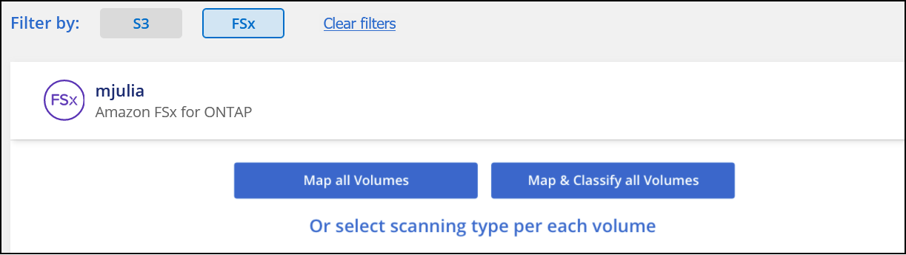
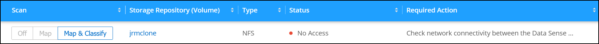

发行说明
发行说明
开始使用适用于Amazon FSx for ONTAP 的BlueXP分类
 建议更改
建议更改
完成几个步骤即可开始扫描具有BlueXP分类的Amazon FSx for ONTAP 卷。
开始之前
-
要部署和管理BlueXP分类、您需要AWS中的主动连接器。
-
创建工作环境时选择的安全组必须允许来自BlueXP分类实例的流量。您可以使用连接到 FSX for ONTAP 文件系统的 ENI 来查找关联的安全组，并使用 AWS 管理控制台对其进行编辑。
快速入门
按照以下步骤快速入门，或者向下滚动以查看完整详细信息。
 发现要扫描的FSX for ONTAP 文件系统
发现要扫描的FSX for ONTAP 文件系统在扫描 ONTAP 卷的 FSX 之前， "您必须具有配置了卷的 FSX 工作环境"。
 部署BlueXP分类实例
部署BlueXP分类实例"在BlueXP中部署BlueXP分类" 如果尚未部署实例。
 启用BlueXP分类并选择要扫描的卷
启用BlueXP分类并选择要扫描的卷选择*配置*选项卡，并为特定工作环境中的卷激活合规性扫描。
 确保能够访问卷
确保能够访问卷启用BlueXP分类后、请确保它可以访问所有卷。
-
BlueXP分类实例需要与每个FSx for ONTAP 子网建立网络连接。
-
确保以下端口对BlueXP分类实例开放：
-
对于 NFS —端口 111 和 2049 。
-
对于 CIFS —端口 139 和 445 。
-
-
NFS卷导出策略必须允许从BlueXP分类实例进行访问。
-
BlueXP分类需要Active Directory凭据才能扫描CIFS卷。+ 单击 * 合规性 * > * 配置 * > * 编辑 CIFS 凭据 * 并提供凭据。
 管理要扫描的卷
管理要扫描的卷选择或取消选择要扫描的卷、BlueXP分类将开始或停止扫描这些卷。
正在发现要扫描的 FSX for ONTAP 文件系统
如果您要扫描的ONTAP 的FSX文件系统尚未作为工作环境在BlueXP中、则可以此时将其添加到画布中。
部署BlueXP分类实例
"部署BlueXP分类" 如果尚未部署实例。
您应在与Connector for AWS和要扫描的FSx卷相同的AWS网络中部署BlueXP分类。
*注意：*扫描FSx卷时、当前不支持在内部位置部署BlueXP分类。
只要该实例具有Internet连接、BlueXP分类软件的升级就会自动进行。
在工作环境中启用BlueXP分类
您可以为FSx for ONTAP 卷启用BlueXP分类。
-
从BlueXP左侧导航菜单中、单击*监管>分类*、然后选择*配置*选项卡。

-
选择要如何扫描每个工作环境中的卷。 "了解映射和分类扫描"：
-
要映射所有卷，请单击 * 映射所有卷 * 。
-
要映射所有卷并对其进行分类，请单击 * 映射并分类所有卷 * 。
-
要自定义每个卷的扫描，请单击 * 或选择每个卷的扫描类型 * ，然后选择要映射和 / 或分类的卷。
请参见 在卷上启用和禁用合规性扫描 了解详细信息。
-
-
在确认对话框中、单击*批准*以使BlueXP分类开始扫描卷。
BlueXP分类开始扫描您在工作环境中选择的卷。一旦BlueXP分类完成初始扫描、结果将显示在Compliance信息板中。所需时间取决于数据量—可能需要几分钟或几小时。

|
|
验证BlueXP分类是否有权访问卷
通过检查网络连接、安全组和导出策略、确保BlueXP分类可以访问卷。
您需要为BlueXP分类提供CIFS凭据、以便它可以访问CIFS卷。
-
在 Configuration 页面上，单击 * 查看详细信息 * 以查看状态并更正任何错误。
例如、下图显示了由于BlueXP分类实例和卷之间的网络连接问题而无法扫描的卷BlueXP分类。

-
确保BlueXP分类实例与包含FSx for ONTAP 卷的每个网络之间具有网络连接。
对于FSx for ONTAP 、BlueXP分类只能扫描与BlueXP位于同一区域的卷。 -
确保以下端口对BlueXP分类实例开放。
-
对于 NFS —端口 111 和 2049 。
-
对于 CIFS —端口 139 和 445 。
-
-
确保NFS卷导出策略包含BlueXP分类实例的IP地址、以便它可以访问每个卷上的数据。
-
如果使用CIFS、请提供BlueXP分类和Active Directory凭据、以便它可以扫描CIFS卷。
-
从BlueXP左侧导航菜单中、单击*监管>分类*、然后选择*配置*选项卡。
-
对于每个工作环境，单击*编辑CIFS凭据*并输入BlueXP分类访问系统上的CIFS卷所需的用户名和密码。
这些凭据可以是只读的、但提供管理员凭据可确保BlueXP分类可以读取需要提升权限的任何数据。这些凭据存储在BlueXP分类实例上。
如果要确保文件"上次访问时间"在BlueXP分类扫描中保持不变、建议用户在CIFS中具有写入属性权限或在NFS中具有写入权限。如果可能、我们建议将Active Directory配置的用户设置为组织中有权访问所有文件的父组的一部分。
输入凭据后，您应看到一条消息，指出所有 CIFS 卷均已成功通过身份验证。
-
在卷上启用和禁用合规性扫描
您可以随时从 " 配置 " 页面在工作环境中启动或停止仅映射扫描或映射和分类扫描。您也可以从仅映射扫描更改为映射和分类扫描，反之亦然。建议您扫描所有卷。
默认情况下、页面顶部的*缺少"写入属性"权限时扫描*开关处于禁用状态。这意味着、如果BlueXP分类在CIFS中没有写入属性权限、或者在NFS中没有写入权限、则系统将不会扫描文件、因为BlueXP分类无法将"上次访问时间"还原为原始时间戳。如果您不关心上次访问时间是否已重置、请打开此开关、无论权限如何、所有文件都将被扫描。 "了解更多信息。"。

| 收件人： | 执行以下操作： |
|---|---|
在卷上启用仅映射扫描 |
在卷区域中，单击 * 映射 * |
对卷启用完全扫描 |
在卷区域中，单击 * 映射和分类 * |
禁用对卷的扫描 |
在卷区域中，单击 * 关闭 * |
在所有卷上启用仅映射扫描 |
在标题区域中，单击 * 映射 * |
对所有卷启用完全扫描 |
在标题区域中，单击 * 映射和分类 * |
禁用对所有卷的扫描 |
在标题区域中，单击 * 关闭 * |
|
|
只有在标题区域中设置了 * 映射 * 或 * 映射和分类 * 设置后，才会自动扫描添加到工作环境中的新卷。如果在标题区域中设置为 * 自定义 * 或 * 关闭 * ，则需要在工作环境中添加的每个新卷上激活映射和 / 或完全扫描。 |
扫描数据保护卷
默认情况下、不会扫描数据保护(DP)卷、因为这些卷不会对外公开、BlueXP分类无法访问它们。这些卷是从适用于 ONTAP 的 FSX 文件系统执行 SnapMirror 操作的目标卷。
最初，卷列表会将这些卷标识为 Type * dp* ，并显示 Status * 未扫描 * 和 Required Action * Enable Access to DP volumes* 。

如果要扫描这些数据保护卷：
-
单击页面顶部的 * 启用对 DP 卷的访问 * 。
-
查看确认消息，然后再次单击 * 启用对 DP 卷的访问 * 。
-
系统将启用最初在源 FSX for ONTAP 文件系统中创建为 NFS 卷的卷。
-
最初在源 FSX for ONTAP 文件系统中创建为 CIFS 卷的卷需要输入 CIFS 凭据才能扫描这些 DP 卷。如果您已输入Active Directory凭据以便BlueXP分类可以扫描CIFS卷、则可以使用这些凭据、也可以指定一组不同的管理员凭据。

-
-
激活要扫描的每个 DP 卷 与启用其他卷的方式相同。
启用后、BlueXP分类会从已激活扫描的每个DP卷创建一个NFS共享。共享导出策略仅允许从BlueXP分类实例进行访问。
-
注意： * 如果在最初启用对 DP 卷的访问时没有 CIFS 数据保护卷，稍后再添加一些，则配置页面顶部会显示 * 启用对 CIFS DP* 的访问。单击此按钮并添加 CIFS 凭据，以便能够访问这些 CIFS DP 卷。
|
|
Active Directory 凭据仅在第一个 CIFS DP 卷的 Storage VM 中注册，因此将扫描该 SVM 上的所有 DP 卷。驻留在其他 SVM 上的任何卷都不会注册 Active Directory 凭据，因此不会扫描这些 DP 卷。 |